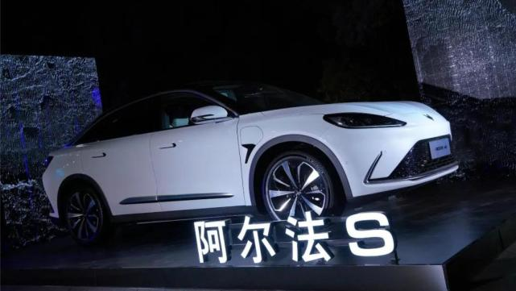

Huawei: a number of heavyweight models using Huawei's smart car components are on the market this year

Today, "2021 international automotive key technology forum" was held in Shanghai. Wang Jun, President of Huawei intelligent automotive solutions Bu, delivered a keynote speech on "innovation, integration, win-win future". Wang Jun said that this year, a number of heavyweight models using Huawei's smart car components will come on the market, officially opening a new scale commercial journey of Huawei's smart car solutions. It is reported that Huawei's self innovated automobile digital architecture includes three computing platforms: intelligent driving computing platform, intelligent cockpit computing platform and intelligent vehicle control computing platform, as well as three major operating systems: AOS (intelligent driving operating system), HOS (Intelligent cockpit operating system) and Vos (intelligent vehicle control operating system).